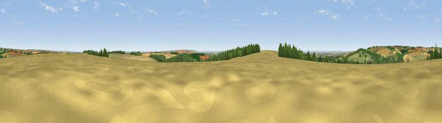

Viewpoint near Warter
#16200 in England · top 38% of its area beats it · near WarterThe view, rendered

A 360° render of this exact spot computed from the terrain model, tree cover and land cover — summer colours, afternoon light, calibrated against photographs of famous viewpoints. Real trees, hedges and buildings will differ in detail.
The panorama
Grey silhouette: terrain skyline in each direction (720 bearings, Earth curvature and refraction included). Dashed green: skyline with trees (+15 m) and buildings (+8 m) as obstacles. Blue strip: how far the ground is visible on each bearing.
Where the view opens
Wedge length = distance to the farthest visible ground on that bearing (vegetation-aware). Rings at 10, 25 and 50 km.
What fills the view
65% cropland · 17% grassland · 15% woodland · 2% built-up
Angular shares of the visible panorama (visual magnitude), not map area. Landscape diversity 0.42 (0–1 Shannon).
Key numbers
More beautiful places nearby
The staircase of upgrades: each row has a higher view potential than everything closer. Driving times are estimates from straight-line distance, calibrated against real road routing — check an actual route before setting out.
| Place | Direction | Drive | Score |
|---|---|---|---|
| Viewpoint near Nunburnholme | SW · 1 km | ~4 min | 68.5 |
| Viewpoint near Millington | NW · 8 km | ~15 min | 69.7 |
| Viewpoint near Bishop Wilton | NW · 9 km | ~18 min | 71.5 |
| Garrowby Hill (A166 crest) | NW · 11 km | ~20 min | 71.9 |
| Viewpoint near Acklam | NNW · 14 km | ~26 min | 73.8 |
| Beacon Hill | NE · 38 km | ~57 min | 79.1 |
| Viewpoint near Speeton | NE · 38 km | ~57 min | 80.0 |
| Olivers Mount | NNE · 42 km | ~62 min | 80.3 |
53.92375, -0.67553 · source: screening · position refined by local search. Computed location — check access rights before visiting.